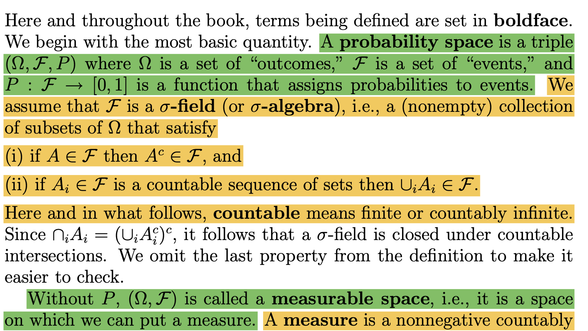
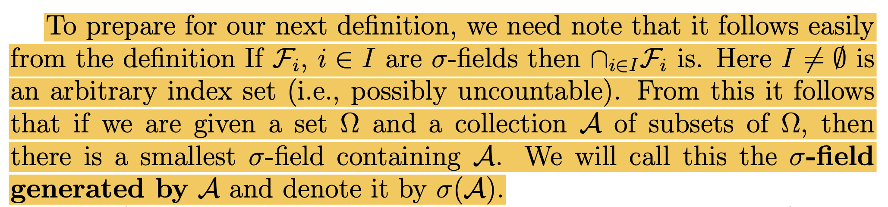
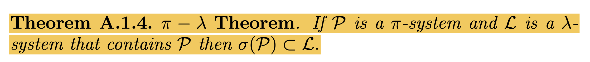

강의영상
youtube: https://youtube.com/playlist?list=PLQqh36zP38-y2r-mEbWKnTAC_8CN5HcGo
예비학습
약한조건, 약한정리, 강한조건, 강한정리
- 정리: 어떠한 조건을 만족하면, 어떠한 결론이 나온다.
- 결론: 우리가 원하는 것.
- 조건: 우리가 원하는 것을 얻기 위한 고난과정.
- 결론이 동일하다면 조건이 약할 수록 유리하다.
- 정리1: 수업에 온라인으로 참석하거나 오프라인으로 참석한다면 모두 출석으로 인정한다.
- 정리2: 수업에 오프라인으로 참석할때만 출석으로 인정한다.
정리2의 조건이 만족되면 정리1의 조건은 자동으로 만족된다. 따라서 정리2의 조건이 더 강한 조건이다. 조건이 강할수록 불리하므로 정리2가 더 불리하다.
- 조건이 동일하다면 결론이 강한 쪽이 유리하다.
- 정리1: 중간고사와 기말고사를 모두 응시한다면, B학점 이상이다.
- 정리2: 중간고사와 기말고사를 모두 응시한다면, A학점 이상이다.
정리2의 결론이 만족되면 정리1의 결론은 자동으로 만족되므로 정리2의 결론이 더 강하다. 결론은 강할수록 유리하므로 정리2가 더 유리하다.
쓸모없는 측도
- 세상엔 측도의 정의를 만족하지만 쓸모 없는 측도가 있다.
- 예시1: \({\cal F}\)의 모든 원소의 메져값은 0이다.
- 예시2: \({\cal F}\)의 모든 원소의 메져값은 무한대이다.
- 예시2와 같은 측도를 고려하고 싶지 않음 \(\Rightarrow\) 유한측도, 시그마유한측도의 개발
쓸모없는 가측공간
- 세상엔 쓸모없는 잴 수 없는 공간이 있다. (유의미한 측도를 주는게 불가능한 잴 수 있는 공간)
- 예시1: \({\cal F}= \{\emptyset, \Omega\}\)
- 예시2: \(\Omega =\mathbb{R}\) 일때 \({\cal F}=2^{\mathbb{R}}\) (르벡메져로 측정불가능함, 모든 원소의 메져를 0으로 잡으면 무모순으로 길이를 정의할 수는 있겠으나 무슨의미?)
- 예시2와 같은 \({\cal F}\)는 고려하고 싶지 않음 \(\Rightarrow\) \(\sigma({\cal A})\), 카라테오도리 확장정리의 고안.
유한측도, 시그마유한측도
- \(m\)이 잴 수 있는 공간 \((\Omega, {\cal F})\)에서의 측도라고 하자.
- \(\forall A \in {\cal F}\), \(m(A) < \infty\) 이면 \(m\)을 유한측도라고 한다.1
- \(\exists A_1,A_2,\dots \in {\cal F}\) such that (1) \(\cup_{i=1}^{\infty}A_i = \Omega\) (2) \(\forall i \in \mathbb{N}:~ m(A_i)<\infty\) 이면 \(m\)을 시그마유한측도라고 한다.
1 사실 그냥 \(m(\Omega)<\infty\)라는 소리야
2 \(A_1=\Omega\)로 잡으면 된다
- NOTE: 모든 확률측도는 유한측도이다. 모든 유한측도는 시그마유한측도이다.2
- 확률측도라는 것은 매우 강한 조건임
- 시그마유한측도라는 것은 확률측도보다 훨씬 약한 조건임
- 직관: 제 생각일 뿐이어요..
- 세상엔 측도의 정의는 만족하지만 쓸모없는 측도가 있다. (모든 원소를 쟀더니 0이더라, 모든 원소를 쟀더니 무한대더라)
- 그래서 모든 원소값에 무한대를 주는 측도는 인정하고 싶은 마음이 별로 없음. (하지만 측도의 정의는 만족)
- 그래서 그냥 유한측도만 생각하기로 했는데…
- 유한측도는 아니지만 시그마유한측도의 정의를 만족하는 경우 (엄청 중요해 보이는 예제들이 시그마유한측도잖아?)
- 르벡메져
- 카운팅메져: \(m\) is counting msr on \((\Omega, {\cal F})\) iff \(m(A) = \begin{cases} |A| & {\tt if}~ A~{\tt is~finite} \\ \infty & {\tt if}~A~{\tt is~infinite}\end{cases}\)
- 시그마유한측도의 느낌: 전체집합을 카운터블 유니온으로 커버하는 메져유한인 집합열이 1개만 있으면 된다.
(기억해둘만한 예시)
\((\mathbb{Z}, 2^{\mathbb{Z}})\) 를 잴 수 있는 공간이라고 하자. \(m\)을 공간 \((\mathbb{Z}, 2^{\mathbb{Z}})\)에서의 카운팅메져라고 하자.
집합열1
- \(A_1=\mathbb{N}\)
- \(A_2=\mathbb{N} \cup \{0\}\)
- \(A_3=\mathbb{N} \cup \{-1,0\}\)
- \(\dots\)
집합열2
- \(B_1=\{0\}\)
- \(B_2=\{0,1\}\)
- \(B_3=\{-1,0,1\}\)
- \(\dots\)
집합열1와 집합열2는
(1)\(\cup_{i=1}^{\infty}A_i=\mathbb{Z}\),(2)\(\forall i \in \mathbb{N}:~ m(A_i)=\infty\)(1)\(\cup_{i=1}^{\infty}B_i=\mathbb{Z}\),(2)\(\forall i \in \mathbb{N}:~ m(B_i)<\infty\)
를 만족한다. 즉 집합열1은 전체집합을 카운터블 유니온으로 커버하지만 메져유한은 아니고, 집합열2는 전제집합을 카운터블 유니온으로 커버하고 메져유한이다. 집합열2의 존재로 인하여 \(m\)은 \((\mathbb{Z}, 2^{\mathbb{Z}})\)에서의 시그마유한측도가 된다.
확률공간
- \(P:{\cal F} \to [0,1]\) 가 잴 수 있는 공간 \((\Omega, {\cal F})\) 에서의 확률측도라면, \((\Omega, {\cal F}, P)\) 를 확률공간이라 선언할 수 있다.
- \((\Omega, {\cal F})\)가 잴수 있는 공간이라는 선언은 \({\cal F}\)가 \(\Omega\)에 대한 시그마필드라는 것이 내포되어 있다.
- \((\Omega, {\cal F}, P)\)가 확률공간이라는 선언에는
- \({\cal F}\)는 \(\Omega\)에 대한 시그마필드이며,
- \(P\)는 \((\Omega, {\cal F})\)에서의 확률측도임이 내포되어 있다.
- 교재의 언급 (p1) – 초록색부분

시그마유한측도공간
- \(m:{\cal F} \to [0,\infty]\)이 잴 수 있는 공간 \((\Omega, {\cal F})\)에서의 시그마유한측도라면, \((\Omega, {\cal F}, m)\)을 시그마유한측도공간이라 부른다.
- \((\Omega, {\cal F}, m)\)이 시그마유한측도공간이라는 선언에는
- \({\cal F}\)는 \(\Omega\)에 대한 시그마필드이며,
- \(m\)는 \((\Omega, {\cal F})\)에서의 시그마유한측도임이 내포되어 있다.
Generating \(\sigma\)-field
state
- Thm (귀찮아서 만든 이론1): 모든 \({\cal A} \subset 2^{\Omega}\) 에 대하여 smallest \(\sigma\)-field containing \({\cal A}\), 즉 \(\sigma({\cal A})\)는 존재한다.
- 그리고 당연히
smallest조건에 의에서 유일성이 보장됨
증명을 위한 준비학습
- 이론: (\(\star\)) 임의의 인덱스 집합 \(I\neq\emptyset\)를 고려하자. 여기에서 \(I\)는 uncountable set일 수도 있다. 아래의 사실에 증명하라.
- \({\cal F}_i\)가 모두 시그마필드라면, \(\cap_{i \in I}{\cal F_i}\) 역시 시그마필드이다.
(증명)
편의상 \({\cal F}= \cap_{i \in I} {\cal F}_i\) 라고 하자. \({\cal F}\)가 시그마필드임을 보이기 위해서는
- \(A \in {\cal F} \Rightarrow A^c \in {\cal F}\)
- \(A_1,A_2 \dots \in {\cal F} \Rightarrow \cup_{i}A_i \in {\cal F}\)
만 보이면 된다. (이럴때는 전체집합 조건하나를 빼는게 유리하다)
1번체크
\(A \in {\cal F} \Rightarrow \forall i: A \in {\cal F}_i \Rightarrow \forall i: A^c \in {\cal F}_i \Rightarrow A^c \in {\cal F}\)
2번체크
\(A_1,A_2,\dots \in {\cal F} \Rightarrow \forall i: A_1,A_2,\dots \in {\cal F}_i \Rightarrow \forall i: \cup_jA_j \in {\cal F}_i \Rightarrow \cup_jA_j \in {\cal F}\)
증명
- Thm (귀찮아서 만든 이론1): 모든 \({\cal A} \subset 2^{\Omega}\) 에 대하여 smallest \(\sigma\)-field containing \({\cal A}\), 즉 \(\sigma({\cal A})\)는 존재한다.
- 그리고 당연히
smallest조건에 의해 유일성이 보장됨
(증명)
\({\cal A}\)를 포함하는 모든 시그마필드를 구하고 그걸 교집합하여 결과를 \({\cal F}\)라고 하자. 아래의 사실은 자명하게 성립한다.
- 시그마필드의 교집합은 시그마필드이므로 \({\cal F}\)는 시그마필드이다.
- 교집합을 하면 할수록 집합은 작아지므로 \({\cal F}\)는 위에서 구한 시그마필드중에서 가장 작다.
- \({\cal F}\)는 \({\cal A}\)를 포함한다.
따라서 \({\cal F}\)는 (\({\cal A}\)를 포함하는 모든 시그마필드를 교집합하여 얻은 집합) \({\cal A}\)를 포함하는 가장 작은 시그마필드가 된다.
- 아래는 교재의 언급 (p3)

Dynkin’s \(\pi\)-\(\lambda\) theorem
state
- Thm: 딘킨의 \(\pi-\lambda\) 정리 ver1. (\(\star\))
\({\cal P}\)가 파이시스템이면 \(l({\cal P})=\sigma({\cal P})\)이다.
증명을 위한 준비학습
- 이론: 임의의 인덱스 집합 \(I\neq\emptyset\)를 고려하자. 여기에서 \(I\)는 uncountable set일 수도 있다. 아래의 사실이 성립한다.
- \({\cal F}_i\)가 모두 시그마필드라면, \(\cap_{i \in I}{\cal F_i}\) 역시 시그마필드이다.
- \({\cal A}_i\)가 모두 시그마링, \(\cap_{i \in I}{\cal A_i}\) 역시 시그마링이다.
- \({\cal A}_i\)가 모두 알지브라라면, \(\cap_{i \in I}{\cal A_i}\) 역시 알지브라이다.
- \({\cal A}_i\)가 모두 링이라면, \(\cap_{i \in I}{\cal A_i}\) 역시 링이다.
- \({\cal A}_i\)가 모두 람다시스템이라면, \(\cap_{i \in I}{\cal A_i}\) 역시 람다시스템이다.
세미알지브라, 세미링, 파이시스템은 성립안함.
- 예제1: 아래를 고려하자.
- \(\Omega = \{1,2,3,4\}\)
- \({\cal A}_1 = \{\emptyset, \{1\}, \{2,3\}, \{4\}, \Omega\}\)
- \({\cal A}_2 = \{\emptyset, \{1\}, \{2\}, \{3,4\}, \Omega\}\)
\({\cal A}_1, {\cal A}_2\)는 모두 세미알지브라이다. 하지만 \({\cal A}_1 \cap {\cal A}_2 = \{\emptyset, \Omega, \{1\}\}\)은 세미알지브라가 아니다.
이 예제에서
세미알지브라를세미링으로 바꾸고 읽어도 성립함.
- 예제2: 아래를 고려하자.
- \(\Omega=\{H,T\}\)
- \({\cal A}_1 = \{\{H\}\}\)
- \({\cal A}_2 = \{\{T\}\}\)
\({\cal A}_1, {\cal A}_2\)는 모두 파이시스템이다. 하지만 \({\cal A}_1 \cap {\cal A}_2 = \emptyset\)은 파이시스템이 아니다.
- 이론: 임의의 \({\cal A}\)에 대하여 아래는 존재한다.
- \({\cal A}\)를 포함하는 가장 작은 시그마필드, \(\sigma({\cal A})\)
- \({\cal A}\)를 포함하는 가장 작은 시그마링
- \({\cal A}\)를 포함하는 가장 작은 알지브라
- \({\cal A}\)를 포함하는 가장 작은 링
- \({\cal A}\)를 포함하는 가장 작은 람다시스템, \(l({\cal A})\)
- 참고: “\({\cal A}\)를 포함하는 가장 작은 세미링”, 혹은 “\({\cal A}\)를 포함하는 가장 작은 세미알지브라”와 같은 것은 존재하지 않음.
- 예제3: 아래를 고려하자.
- \(\Omega = \{1,2,3,4\}\)
- \({\cal A} = \{\emptyset, \Omega, \{1\}\}\)
이때 \({\cal A}\)를 포함하는 가장 작은 세미알지브라가
\[{\cal A}_1 = \{\emptyset, \Omega, \{1\}, \{2,3,4\}\}\]
라고 주장할 수는 없음. 왜냐하면
\[{\cal A}_2 = \{\emptyset, \Omega, \{1\}, \{2\},\{3\},\{4\}\}\]
역시 \({\cal A}\)를 포함하는 세미알지브라이지만 \({\cal A}_1 \not \subset {\cal A}_2\)이므로.
- 이론: \({\cal P}\)가 파이시스템이라고 하자. 아래가 성립한다.
- \({\cal P}\)를 포함하는 가장 작은 시그마필드는 그 자체로 파이시스템이다. (즉 \(\sigma({\cal P})\)는 파이시스템이다)
- \({\cal P}\)를 포함하는 가장 작은 시그마링은 그 자체로 파이시스템이다.
- \({\cal P}\)를 포함하는 가장 작은 알지브라는 그 자체로 파이시스템이다.
- \({\cal P}\)를 포함하는 가장 작은 링은 그 자체로 파이시스템이다.
- \({\cal P}\)를 포함하는 가장 작은 람다시스템은 그 자체로 파이시스템이다?? (즉 \(l({\cal P})\)는 파이시스템이다?)
- 1-4는 자명한데, 5는 자명하지 않다. 하지만 성립한다. (5의 증명은 복잡함. 그냥 암기하자.)
- 이론: \({\cal A}\)가 람다시스템이다. \(\Rightarrow\) (\({\cal A}\)는 시그마필드이다. \(\Leftrightarrow\) \({\cal A}\)는 파이시스템이다.)
(증명) 아래의 표를 살펴보면 간단하게 증명가능하다.
| \(A \cap B\) | \(\emptyset\) | \(A-B\) | \(\cup_iA_i=\uplus_i B_i\) | \(\Omega\) | \(A^c\) | \(A\cup B\) | \(\cup_{i=1}^{\infty}A_i\) | \(\uplus_{i=1}^{\infty}B_i\) | \(\cap_{i=1}^{\infty}A_i\) | |
|---|---|---|---|---|---|---|---|---|---|---|
| \(\pi\)-system | \(O\) | \(X\) | \(X\) | \(X\) | \(X\) | \(X\) | \(X\) | \(X\) | \(X\) | \(X\) |
| \(\lambda\)-system | \(X\) | \(O\) | \(\Delta'\) | \(X\) | \(O\) | \(O\) | \(X\) | \(X\) | \(O\) | \(X\) |
| \(\sigma\)-field | \(O\) | \(O\) | \(O\) | \(O\) | \(O\) | \(O\) | \(O\) | \(O\) | \(O\) | \(O\) |
증명
(증명)
\(l(\cal P) \subset \sigma({\cal P})\) 임을 보이고, \(l(\cal P) \supset \sigma({\cal P})\) 임을 보이면된다.
“\(\subset\)”: 당연하다.3
3 직접 만들어봐, 시그마필드가 당연히 조건이 더 복잡하므로 이거저것 추가할 것이 많음
“\(\supset\)”: \(l({\cal P})\)가 시그마필드임을 보이면 자동으로 \(l({\cal P}) \supset \sigma({\cal P})\)임이 보여진다.
\(l({\cal P})\)이 시그마필드임은 아래를 조합하면 간단히 증명된다.
- 파이시스템 \({\cal P}\)를 포함하는 가장 작은 람다시스템 \(l({\cal P})\)은 그 자체로 파이시스템이다.
- \({\cal A}\)가 람다시스템이다. \(\Rightarrow\) (\({\cal A}\)는 시그마필드이다. \(\Leftrightarrow\) \({\cal A}\)는 파이시스템이다.)
- 생각의 시간
- 시그마필드(=잴 수 있는 집합의 모임)을 만들기 위해서는, 그 모임(=collection)이 파이시스템이면서 동시에 람다시스템임을 보이면 된다.
- 딘킨의 정리는 적당한 파이시스템을 만들고 그것을 통하여 잴 수 있는 집합의 모임을 확률의 공리에 맞게만 설정한다면, 그것이 시그마필드가 된다는 것을 보이는 것이다.
- 제 생각
- 메져가 “선분의 길이”를 일반화 하는 개념이라 생각한다면 파이시스템에서 시작하여 시그마필드로 확장하는 것이 자연스럽다.
- 메져가 “확률”을 일반화하는 개념이라 생각한다면 람다시스템에서 시작하는게 자연스럽다.4
- 딘킨의 \(\pi-\lambda\) 정리는 두 흐름을 합치는 정리이다.
4 딘킨도 이렇게 생각하지 않았을까
딘킨의 \(\pi-\lambda\) 정리 ver2.
- 이론: 딘킨의 \(\pi-\lambda\) 정리 ver2.
\({\cal P}\)가 파이시스템이고 \({\cal L}\)이 \({\cal P}\)를 포함하는 람다시스템이라면 \(\sigma({\cal P}) \subset {\cal L}\)이다.
(설명)
Durret에 나온 딘킨의 \(\pi-\lambda\) thm 이다. 굉장히 불친절한 편인데, ver2가 증명되면 ver1은 자명하게5 임플라이 되므로 ver2를 대신 state한 것이다.
5 솔직히 그렇게 안자명해
ver2가 ver1를 임플라이 하는 이유: ver1의 \(l({\cal P}) \subset \sigma({\cal P})\)은 당연하고 \(l({\cal P}) \supset \sigma({\cal P})\)만 보이면 되는데, 이미 \(\sigma({\cal P}) \subset {\cal L}\)임을 보였으므로 \(l({\cal P})\)의 정의에 의하여 \({\cal L} \supset l({\cal P}) \supset \sigma({\cal P})\)이 성립한다.
- 교재의 언급 (p 456)

파이시스템에서의 확장이론 (확률버전)
state
- 귀찮아서 만든 이론2: 운이 좋다면, \({\cal A}\) 에서 확률의 공리를 만족하는 적당한 함수 \(\tilde{P}:{\cal A} \to [0,1]\)를 \((\Omega, \sigma({\cal A}))\) 에서의 확률측도 \(P\)로 업그레이드 할 수 있으며 업그레이드 결과는 유일하다.
- 귀찮아서 만든 이론2는 (1) 업그레이드가 가능하냐 (2) 그 업그레이드가 유일하냐 를 따져야하는데 이중 유일성만을 따져보자.
- Thm: \((\Omega, \sigma({\cal A}), P)\)를 확률공간이라고 하자. 여기에서 \({\cal A}\)는 파이시스템이라고 가정하자. 그렇다면 확률측도 \(P:\sigma({\cal A}) \to [0,1]\)의 값은 \(P: {\cal A} \to [0,1]\)의 값에 의하여 유일하게 결정된다.
\({\cal A}\)가 파이시스템이라면, \({\cal A}\)에서는 agree하지만 \(\sigma({\cal A})\)에서는 agree하지 않는 확률측도 \(P:\sigma({\cal A}) \to [0,1]\)는 존재할 수 없다는 의미이다.
활용예제 (\(\star\))
- 아래의 이론을 이해하기 위한 예제들을 살펴보자.
이론: \((\Omega, \sigma({\cal A}), P)\)를 확률공간이라고 하자. 여기에서 \({\cal A}\)는 파이시스템이라고 가정하자. 그렇다면 확률측도 \(P:\sigma({\cal A}) \to [0,1]\)의 값은 \(P: {\cal A} \to [0,1]\)의 값에 의하여 유일하게 결정된다.
(예제1) – 4주차에서 했던 예제에요
- \(\Omega=\{1,2,3,4\}\)이라고 하고 \({\cal A} = \{\emptyset, \{1\},\{2\},\{3,4\},\Omega\}\) 라고 하자.
- \({\cal A}\)는 파이시스템이다.
- 아래표의 왼쪽의 \(P\)와 같은 확률 측도를 고려하자.
| \(P\) | \(P'\) | |
|---|---|---|
| \(\emptyset\) | \(0\) | \(0\) |
| \(\{1\}\) | \(\frac{1}{4}\) | \(\frac{1}{4}\) |
| \(\{2\}\) | \(\frac{1}{2}\) | \(\frac{1}{2}\) |
| \(\{3,4\}\) | \(\frac{1}{4}\) | \(\frac{1}{4}\) |
| \(\Omega\) | \(1\) | \(1\) |
| \(-\) | \(-\) | \(-\) |
| \(\{1,2\}\) | \(\frac{3}{4}\) | \(\frac{3}{4}\) 이 아닐 수 있어? |
| \(\{1,3,4\}\) | \(\frac{1}{2}\) | \(\frac{1}{2}\) 이 아닐 수 있어? |
| \(\{2,3,4\}\) | \(\frac{3}{4}\) | \(\frac{3}{4}\) 이 아닐 수 있어? |
\({\cal A}\)에서는 \(P\)와 그 값이 같지만 \(\sigma({\cal A})-{\cal A}\)에서는 다른값을 가질 수도 있는 \((\Omega, \sigma({\cal A}))\) 에서의 확률측도 \(P'\)는 존재하지 않는다.
즉 \({\cal A}\)가 파이시스템이라면, \((\Omega,\sigma({\cal A}))\)에의 모든 확률측도 \(P\)는 \({\cal A}\)에서의 값만 define하면 나머지 \(\sigma({\cal A})-{\cal A}\)에서의 값은 유니크하게 결정된다.
- 이 이론에 대한 짧은 생각
- 생각1: 일단 \((\Omega,\sigma({\cal A})\)에서의 확률측도 \(P\)의 존재성은 가정하고 들어간다. 즉 “존재한다면 유일하다”는 의미이지, “유일하게 존재한다”의 의미는 아니다.
- 생각2: 따라서 이 정리는 “\({\cal A}\)가 파이시스템일 경우, 함수 \(\tilde{P}:{\cal A} \to [0,1]\)가 \((\Omega,\sigma({\cal A}))\)에서의 확률측도 \(P\)로 업그레이드가 가능하다면 그 결과는 유일하다” 정도로 해석할 수 있다.
(예제2) – 이것도 4주차에서 했던 예제입니다.
- \(\Omega=\{1,2,3,4\}\) 이라고 하고 \({\cal A} = \{\emptyset, \{1,2\},\{2,3\}, \Omega\}\) 라고 하자.
- 여기에서 \({\cal A}\)는 파이시스템이 아니다. 따라서 \({\cal A}\)에서의 값은 agree하지만 \((\Omega, \sigma({\cal A}))\)에서 agree하지 않는 서로 다른 확률측도가 존재할 수 있다.
| \(P_1\) | \(P_2\) | |
|---|---|---|
| \(\emptyset\) | \(0\) | \(0\) |
| \(\{1,2\}\) | \(\frac{1}{2}\) | \(\frac{1}{2}\) |
| \(\{2,3\}\) | \(\frac{1}{2}\) | \(\frac{1}{2}\) |
| \(\Omega\) | \(1\) | \(1\) |
| \(-\) | \(-\) | \(-\) |
| \(\{1\}\) | \(0\) | \(\frac{1}{2}\) |
| \(\{2\}\) | \(\frac{1}{2}\) | \(0\) |
| \(\{3\}\) | \(0\) | \(\frac{1}{2}\) |
| \(\{4\}\) | \(\frac{1}{2}\) | \(0\) |
| \(\{1,3\}\) | \(0\) | \(1\) |
| \(\{1,4\}\) | \(\frac{1}{2}\) | \(\frac{1}{2}\) |
| \(\{2,4\}\) | \(1\) | \(0\) |
| \(\{3,4\}\) | \(\frac{1}{2}\) | \(\frac{1}{2}\) |
| \(\{2,3,4\}\) | \(1\) | \(\frac{1}{2}\) |
| \(\{1,3,4\}\) | \(\frac{1}{2}\) | \(1\) |
| \(\{1,2,4\}\) | \(1\) | \(\frac{1}{2}\) |
| \(\{1,2,3\}\) | \(\frac{1}{2}\) | \(1\) |
- 만약에 이 예제에서 \({\cal A}\)를 아래와 같이 수정한다면
\[{\cal A}=\{\emptyset, \{1,2\}, \{2,3\}, \{2\}\}\]
이번에는 \({\cal A}\)는 파이시스템이 된다. 따라서 이 경우 \((\Omega, \sigma({\cal A}))\)에서의 모든 확률측도 \(P\)는 \({\cal A}\)의 값에 의하여 유일하게 결정된다.
(예제3)
- \(\Omega=\{H,T\}\) 이라고 하고 \({\cal A} = \{\{H\}\}\) 라고 하자.
- 여기에서 \({\cal A}\)은 파이시스템이므로 가측공간 \((\Omega,\sigma({\cal A}))\)에서 정의가능한 모든 확률측도 \(P\)는 \({\cal A}\)에서의 값으로만 정의해도 무방하다.6
6 그래도 유일하게 결정되니까
(예제4) – 통계학과라서 행복해
- \(\Omega=\{a,b\}\) 이라고 하고 \({\cal A} = \{\{a\}\}\) 라고 하자.
- 여기에서 \({\cal A}\)은 파이시스템이다.
- 가측공간 \((\Omega,\sigma({\cal A}))\)에서 정의가능한 모든 확률측도 \(P\)는 \({\cal A}\)에서의 값으로 유일하게 결정된다.
- 그렇지만 가측공간 \((\Omega,\sigma({\cal A})\)에서 정의가능한 “측도” \(m\)은 \({\cal A}\)에서의 값으로 유일하게 결정되지 않는다.7
7 그렇지만 우리가 알바는 아님
| \(m_1\) | \(m_2\) | |
|---|---|---|
| \(\{a\}\) | \(\frac{1}{2}\) | \(\frac{1}{2}\) |
| \(-\) | \(-\) | \(-\) |
| \(\emptyset\) | \(0\) | \(0\) |
| \(\{b\}\) | \(\frac{1}{2}\) | \(1\) |
| \(\Omega\) | \(1\) | \(\frac{3}{2}\) |
증명
- 아래의 이론에 대한 증명
Thm: \((\Omega, \sigma({\cal A}), P)\)를 확률공간이라고 하자. 여기에서 \({\cal A}\)는 파이시스템이라고 가정하자. 그렇다면 확률측도 \(P:\sigma({\cal A}) \to [0,1]\)의 값은 \(P: {\cal A} \to [0,1]\)의 값에 의하여 유일하게 결정된다.
증명 (확률측도라는 가정을 추가하여 교재의 버전을 살짝 쉽게 만듬)
LET
- \((\Omega, \sigma({\cal A}))\) 는 잴 수 있는 공간임.
- \(P_1,P_2\)는 \((\Omega, \sigma({\cal A}))\)에서의 확률측도임.
- \(P_1,P_2\)는 “\(\forall A \in {\cal A}: P_1(A)=P_2(A)\)”를 만족함.
전략: 잴 수 있는 공간 \((\Omega, \sigma({\cal A}))\) 에서의 두 측도 \(P_1\), \(P_2\)가 \({\cal A}\)에서는 일치하지만 \(\sigma({\cal A})-{\cal A}\)에서는 일치하지 않는 경우를 찾으려 해보고, 그것이 불가능함을 보이자.
LET: \(\tilde{\cal D}=\{B \in \sigma({\cal A}): P_1(B) \neq P_2(B)\}\)
ISTST: \(\tilde{\cal D} =\emptyset\)
ISTST: \({\cal D} = \{B \in \sigma({\cal A}): P_1(B) = P_2(B) \} = \sigma({\cal A})\)
ISTST: (1) \({\cal D} \subset \sigma({\cal A})\) (2) \({\cal D} \supset \sigma({\cal A})\)
ISTST: \({\cal D} \supset \sigma({\cal A})\)
NOTE: IF (1) \({\cal D}\) is containing \({\cal A}\) (2) \({\cal D}\) is \(\lambda\)-system, THEN we can say \({\cal D} \supset \sigma({\cal A})=l({\cal A})\)
ISTST: (1) \({\cal A} \subset {\cal D}\) (2) \({\cal D}\) is \(\lambda\)-system.
ISTST: 1. \(\Omega \in {\cal D}\) 2. \(A,B \in {\cal D}, A\subset B\) \(\Rightarrow\) \(B-A \in {\cal D}\) 3. \(\forall B_1,B_2,\dots, \in {\cal D}\), \(\uplus_{i=1}^{\infty} B_i \in {\cal D}\)
CHECK 1: \(P_1(\Omega) = P_2(\Omega)\)
CHECK 2: \(P_1(B-A) = P_1(B)-P_1(A) = P_2(B) - P_2(A) = P_2(B-A)\)
CHECK 3: \(P_1(\uplus_{i=1}^{\infty} B_i)=P_1(B_1)+P_1(B_2)\dots = P_2(B_1)+P_2(B_2) +\dots = P_2(\uplus_{i=1}^\infty B_i)\)
- 보충노트